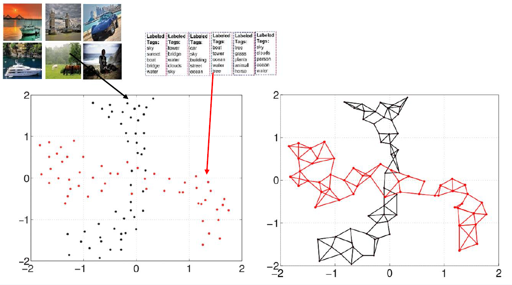

|
Maysam Behmanesh
Publications and Preprints
-
Cross-Modal and Multimodal Data Analysis Based on Functional Mapping of Spectral Descriptors and Manifold Regularization
Neurocomputing, 2024
Maysam Behmanesh, Peyman Adibi, Jocelyn Chanussot and Sayyed Mohammad Saeed Ehsani
[PDF]
-
TIDE: Time Derivative Diffusion for Deep Learning on Graphs
International Conference on Machine Learning (ICML), 2023
Maysam Behmanesh, Maximilian Krahn, and Maks Ovsjanikov
[PDF, code]
-
Geometric Multimodal Deep Learning With Multiscaled Graph Wavelet Convolutional Network
IEEE Transactions on Neural Networks and Learning Systems, 2022
Maysam Behmanesh, Peyman Adibi, Mohammad Saeed Ehsani, and Jocelyn Chanussot
[PDF, code]
-
Geometric multimodal learning based on local signal expansion for joint diagonalization
IEEE Transactions on Signal Processing, 2021
Maysam Behmanesh, Peyman Adibi, Jocelyn Chanussot, Christian Jutten, and Sayyed Mohammad Saeed Ehsani
[PDF, code]
-
Weighted Least Squares Twin Support Vector Machine with Fuzzy Rough Set Theory for Imbalanced Data Classification
CoRR, 2021, arXiv
Maysam Behmanesh, Peyman Adibi, and Hossein Karshenas
[PDF]
-

Geometric Learning of Multimodal Data for Semisupervised Domain Adaptation with Simultaneous Diagonalization of Laplacians
National CSI Computer Conference, CSICC-2019, Sharif University of Technology, Iran, February 2019
Maysam Behmanesh and Peyman Adibi
-
Chaotic Time Series Prediction using Improved ANFIS with Imperialist Competitive Learning Algorithm
International Journal of Soft Computing and Engineering (IJSCE), 2014
Maysam Behmanesh, Majid Mohammadi, and Vahid Sattari
[PDF ]
-
Air Temperature Prediction with Wavelet Transform and Improved Adaptive Neuro-Fuzzy Inference System
14th Iranian Conference on Fuzzy Systems (ICFUZZYS14), Iran, 2014
Maysam Behmanesh and Majid Mohammadi
-
Aaptive Neuro-Fuzzy Inference System Trained with Imperialist Competitive Learning Algorithm for Chaotic Time Series Prediction
14th Iranian Conference on Fuzzy Systems (ICFUZZYS14), Iran, 2014
Maysam Behmanesh and Majid Mohammadi
|